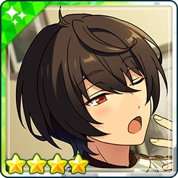
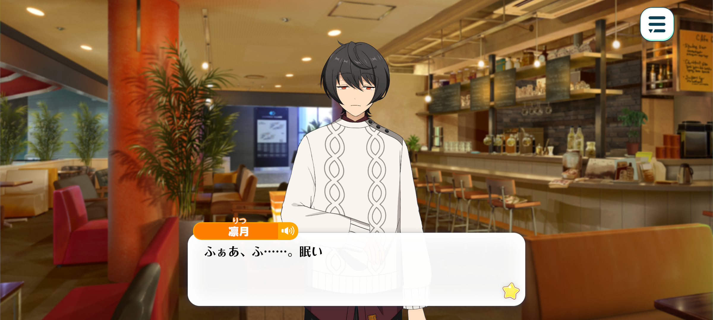
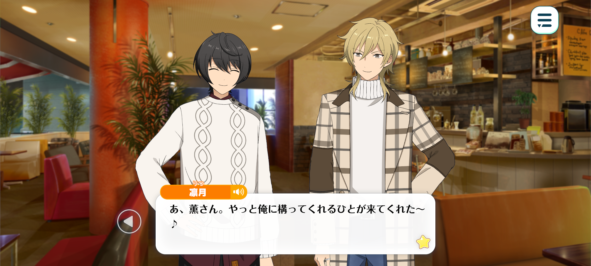
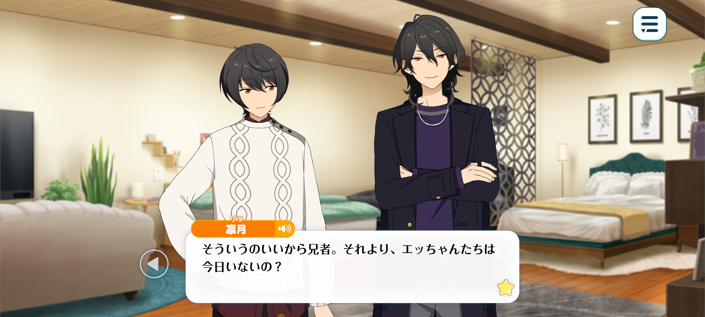
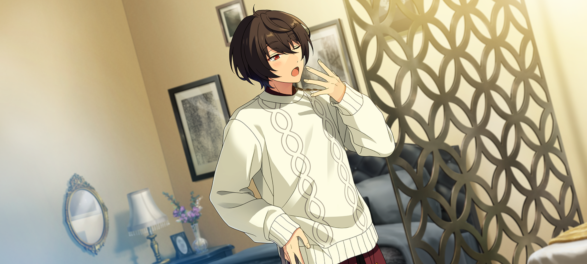

The Occasional Family TLC
Idol Story



Season: Winter

Ritsu: Yaawnnn, hng… so sleepy.
(The only time all of Knights could get together was early in the morning, so I had to drag myself out of bed...)
(Everyone except me had somewhere to be afterwards, leaving me all alone. How heartless of them.)
(I have plans this afternoon too, so if I go back to sleep now, there's no way I'll wake up in time...)
But I'm soooo tired. Haaah~... Maa-kun, help meee~
—That's what I texted him, but he hasn't replied... Hm? Come to think of it, didn't he say he had a photoshoot all day?
And here I am, in desperate need of someone to look after me. Maa-kun's such a cheater~
...Maybe I'll just give up and go back to sleep.

Kaoru: I was wondering who was making all that noise. What are you doing here, Ritsu-kun?
Ritsu: Ah, Kaoru-san. Finally, someone's come to take care of me~♪
Kaoru: Take care of you...? Sorry, but I'm not exactly the person you're looking for.
I have somewhere to be after this, so I need to head out as soon as I've finished my coffee.
Ritsu: Ehhh~ Don't say that! Just pay a little more attention to meee, Kaoru-san~
Spoil me more. Spoil me like you've never spoiled anyone before~...
Kaoru: You're really laying it on thick with the whole "spoil me" routine today. Even more than usual. What's gotten into you?
Ritsu: I actually got up early today, and nobody even praised me for it!
I'm doing my very best to stay awake instead of going straight back to bed, and this is how I'm treated? What a betrayal! I demand better treatment immediately!
Kaoru: Oh, what an adorable reason~.
Well, then, I'll give you just what you need. Good boy! Well done for getting up so early~♪
Ritsu: Nn~, that’s the stuff ♪ You always know just how to praise me when I need it. I wish Kaoru-san were my big brother...
Kaoru: I'm sure Rei-kun would praise you too if he knew how hard you'd been trying.
Ritsu: Hmm? Who's "Rei"? Never heard of him before. My big brother's name is Kaoru.
Kaoru: Don't joke about things like that, okay? Rei-kun would be heartbroken if he heard you say that.
Ritsu: Yeah, I know. But if I sent Anija a message like that, it'd only cause an even bigger headache.
He'd flood my inbox with messages, like someone leaving a million comments on a video.
Kaoru: He probably would. Although, knowing Rei-kun, he'd be more likely to call you.
Ritsu: Yeah, and I'd block him if he did. He's scary enough even without being my big brother.
Kaoru: Haha... You're just as cold to Rei-kun as ever, aren't you? I thought the two of you were finally getting along a little better after what happened during Operetta.
Ritsu: I've learned that if I let Anija get carried away, I'm the one who ends up embarrassed.
Besides, you're much more used to seeing me like this, aren't you, Kaoru-san...?
Kaoru: Well, I suppose I am. But you should show Rei-kun a little affection every now and then.
He's been working awfully hard, after all. Don't you think he deserves a little something in return?
Ritsu: ...
Kaoru: Oh, that reminds me! Since we're on the subject, could I ask you to pass a message along to Rei-kun?
Ritsu: Ehh~. Isn’t that what HoldHands is for?
Kaoru: Now, now. I just thought Rei-kun would be much happier hearing it straight from his beloved little brother ♪.
Ritsu: So you want me to suck up to him for you? What a pain...
Kaoru: Please~? If you've got enough free time to sit around sulking and napping here, surely you can do me this little favour?
Ritsu: …
Sigh... Fine. It's not like I'll do anything but fall asleep if I stay here anyway...
Kaoru: Thank you Ritsu-kun ♪
Well, I’ve got to go in a few moments.
I didn't see Rei-kun when I stopped by the office earlier, so he's probably still asleep at the dorms. It's still pretty early, after all.
Ritsu: Okay. So what am I supposed to tell him?

Rei: Well, well! To think the first thing I'd see upon waking would be my sweet little Ritsu♪ If the day were to end right here, I'd have no regrets!
Come hither, my adorable little angel~! Come rest upon your big brother's lap~♪
Ritsu: No, I'm good. Anyway, aren't E-chan and the others around today?
Rei: It would seem not. Neither Tenshouin-kun nor Shiratori-kun has returned to the dorms since yesterday. Which means you have your big brother all to yourself! You can have all the pampering you desire~
Ritsu: Ah, lucky me.
Rei: Is that all you have to say?! Such a cold response! You're breaking your poor big brother's heart!

Ritsu: You're as annoying as ever. Just so you know, I'm not planning on staying long.
I'm only here to pass along a message from Kaoru-san.
Rei: Kaoru-kun? Has something changed with the arrangements?
Ritsu: You have a meeting tonight about that programme you're appearing in, right? The meeting's been moved to a different location. Kaoru-san said he'll let you know where later.
Rei: Ah, I see. Thank you for taking the trouble to tell me. Now then, Ritsu. Come here.
Surely I must reward my good little brother with plenty of praise and head pats for doing such a wonderful job, hm?♪
Ritsu: How many times do I have to tell you to cut that out? Has your hearing finally given out from acting like an old man all the time?
Honestly, it wasn't even an important message, and Kaoru-san just had to go and use me as his errand boy...
Rei: Hmm... I really can't imagine why Kaoru-kun would send you all the way here over something so trivial.
Is there something else you wanted to tell me? Otherwise, I can't think of any reason you'd have gone out of your way to come all this way.
Ritsu: …
Rei: You can always come to me with anything, my adorable Ritsu. Never hesitate to tell your big brother what's on your mind ♪.
Ritsu: ...Yeah, yeah. You're reading too much into it. I only came to pass along a message.
Rei: Oh, but I find that rather hard to believe. Going out of your way just to deliver a single message? That doesn't sound like my Ritsu at all.
Ritsu: You're hopeless, you senile old man. Do you really have to read some hidden meaning into everything?
Rei: Umu. If you insist, then perhaps I am simply mistaken.
Ritsu: ...Well, if there were another reason...
Maybe it's that I went out of my way to come all the way here and deliver the message in person, first thing in the morning, when Kaoru-san could've just sent it through HoldHands.
Rei: Huh…? Sorry…? W-what do you mean?
Ritsu: My useless big brother's special-treatment subscription has expired~.
Yaaawn... Mm... This is exhausting. I can't stop yawning, so I'm going back to my room for a nap. Bye-bye~
Rei: …Subscription?
Could it be... that Ritsu came all this way just to... see me...!?
W-Wait, my sweet Ritsu! If you're going to take a nap, you can sleep here! We could even share a bed!
I'm begging you! Let me shower you with all the love in my heart, Ritsuuuu!